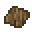
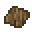

1.14.4
The "Pillaged Villages" tab contains all the features that connects somehow to the 1.14 update, alias the "Village and pillage" update. This dosen't mean that the mod is being released for this version, just has some features that could modify this update's content, or expand on it.
The bark item is coming from logs. It just drops from the log when you strip it with your axe. Exactly 4 pieces of them, now you can use it to craft the stripped logs back to normal logs


 


Log Crafting:


"The Upgraded Aquatics" tab contains all the features that connects somehow to the 1.13 update, alias the "The Update Aquatic". This dosen't mean that the mod is being released for this version, just has some features that could modify this update's content, or expand on it.
The "World of paint update" tab contains all the features that connects somehow to the 1.12 update, alias the "World of Color update". This dosen't mean that the mod is being released for this version, just has some features that could modify this update's content, or expand on it.